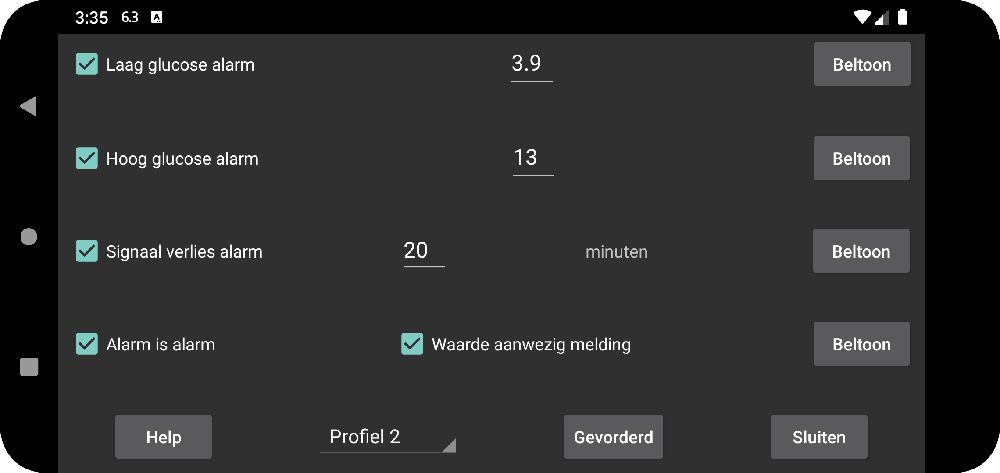

ar be de es fr hi it ja nl pl pt ru sv tr uk uz zh en
De via Bluetooth ontvangen (stream) glucose waarde kan gebruikt worden om een alarm af te laten gaan.
Waarde waarbij en waaronder het alarm af moet gaan.
Waarde waarbij waarboven het alarm af moet gaan.
Geef aan na hoeveel minuten geen glucose waarde via Bluetooth ontvangen moet zijn, voordat een alarm af gaat.
Alarmen stoppen bij een van het volgende:
De aangegeven tijdsperiode is verlopen;
Het grafiek scherm is aangeraakt;
De Android melding is aangeraakt;
Op “Annuleren” in het alarm meldings-schermpje in Juggluco is gedrukt.
Soms werkt de sensor niet. Als deze optie aanstaat, krijg je een melding als de sensor weer werkt, maar pas als je hebt gezien dat de waarde ontbreekt in de Juggluco-app zelf. Als je alleen weet dat de waarde ontbrak vanwege de melding van Juggluco of de wijzerplaat, wordt de waarde aanwezig melding niet opgeroepen.
Voor elk alarm kun je aangeven welke beltoon moet worden afgespeeld en voor hoe lang.
Indien ingesteld, krijgt de beltoon afgespeeld voor laag, hoog en verlies van signaalalarmen de categorie Alarmen in Android. Dit betekent dat in Android-instellingen het volume wordt beheerd met het volume controle met de naam Alarmen en de alarmen niet worden gedempt wanneer het geluid van de hele telefoon wordt uitgeschakeld of op trillen wordt gezet. Als Alarm is alarm niet is ingesteld, wordt de volumeknop voor meldingen op telefoons gebruikt en de systeemknop op de Samsung Galaxy 4-7. Dit is altijd het geval voor de beschikbare meldingswaarde.
Geef aan voor welk profiel deze instellingen gelden. Zo kun je schakelen tussen instellingen voor alarmen en Praat. Je kunt een profiel zo instellen dat het op een bepaald tijdstip automatisch wordt ingeschakeld via Geavanceerd → Tijdrooster.
Menu met geavanceerde alarmen: zeer laag, zeer hoog, binnenkort laag, binnenkort hoog en profielen op een bepaalde tijd actief laten worden.